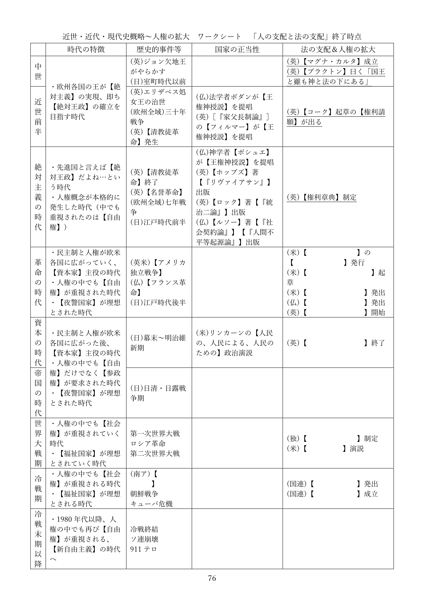

法の支配と法治主義
※令和六年八月に本ページの内容を全面改訂しました。授業動画は改訂前のものです。改訂後の資料を使った授業動画は現在作成中です
●授業動画一覧＆問題集リンク
| 問題集 | ウェブサイト |
|---|---|
| 法の支配と法治主義1／人の支配と法の支配 | YouTube |
| 法の支配と法治主義2／法の支配と法治主義 | YouTube |
| 法の支配と法治主義3／法の種類 | YouTube |
●概要
・現代的な国家に関する歴史的な経緯を、現在学習中である
・その順序は、以前見たように、以下の通りである
１：中世～現代が、どんな時代かを見る
２：絶対主義の時代～現代を、国家の正当性という側面から見る
３：中世～現代を、法という側面から見る
４：中世～現代を、人権という側面から見る
・本節は３。即ち、「中世～現代を、法という側面から見る」である
・換言すれば、「法という観点から見ると、現代的な国家はどういう経緯で登場してきたのか」である
⇒現代的な国家は、法がなければ国家権力に捜査されないし、処罰されない。また法がなければ税金を取られないし、法がなければ年金を受け取れない。こういった「法」が強い力を持つ国家は、どういう経緯で作られてきたのかという点を見ていく
●人の支配と法の支配
・絶対王政の基本的な考え方は、「国は王の持ち物」「王は国であり、国は王である」というものである
・こういう“人の支配”に於いては、支配のやり方も法も、王という人の思いのままとなる
⇒例えば、窃盗は罰金、という法があったとする。しかし絶対王政のような「人の支配」にある国の場合、王は「確かに法では罰金って書いてある。でもそれはそれとしてお前はムカつくから死刑」と言えてしまう。何だったら「盗賊××は死刑にします法」を特別に制定できてしまう
※当然、人権も糞もない
・そういうのはよくない、王のような権力者と雖も従わねばならぬものはある、という思想も当然ある
・王（権力者）の全能を否定し、王と雖も法に従わねばならないとする考え方を【法の支配】という
※この考え方は、「法によって【人権】を保障する」に行きつく。実際、人権の保障は法の支配の目的であるとされる
| 人の支配 | 【法の支配】 |
|---|---|
| 「国は王の持ち物」「王は国であり、国は王である」 | 王のような権力者と雖も従わねばならぬものはある |
| ↓↓ | ↓↓ |
| 王は法に縛られないし、好きな法を好きに作ってよい | 王と雖も法に従わねばならない |
・この法の支配という発想は、イングランド王国で発展してきた
| 中世盛期 | ジョン欠地王が認めさせられた【マグナ・カルタ（大憲章）】 ヘンリー・ド・【ブラクトン】の「国王と雖も神と法の下にある」 |
| 近世前半（【清教徒革命】直前） | 法学者エドワード・【コーク（クック）】が起草した【権利（の）請願】 |
| 絶対主義の時代（【名誉革命】直後） | ウィレム三世が承認した【権利章典】 |
| 帝国の時代 | 憲法学者アルバート・ヴェン・【ダイシー】の代表作［『憲法序説』］出版 |
・まずもって、中世盛期の【マグナ・カルタ】が、法の支配という考え方の由来の一つと言える
⇒当時の裁判官ヘンリー・ド・【ブラクトン】の台詞「国王と雖も神と法の下にある」はマグナ・カルタの精神を現したものとされるが、言っている事が法の支配と一緒である。何せ法の支配は「王と雖も法に従わねばならない」という発想なので…
・また、【清教徒革命】直前にも、議会が王へ法の支配を要求している
・いわゆる【権利（の）請願】である。起草したのは法学者エドワード・【コーク（クック）】であった
⇒彼は、ブラクトンの「国王と雖も神と法の下にある」を引用した事でも有名。請願した相手が“殉教王”チャールズ一世であり、ガン無視され…最終的に、清教徒革命が発生する
・そして【名誉革命】後、マグナ・カルタや権利請願の考え方は、正式な法となる
・即ち、名誉革命で即位したイングランド王、ウィレム三世が承認した【権利章典】である
・マグナ・カルタと権利章典は現代でも、イギリス憲法を構成する重要な文書である
・現代では、「法の支配」と「議会主権」こそがイギリス憲法の二大原理であると認識されている
⇒名誉革命から約二百年後の1885年。憲法学者アルバート・ヴェン・【ダイシー】の代表作［『憲法序説』］が出版されてから、この認識が広がった

●法の支配と法治主義
○概要
・ここまで法の支配という考え方の発展を見てきた
・実は、同じ「法に依る支配」という考え方でも二種類ある。【法の支配】と【法治主義】である
| 法の支配 | 法治主義 | |
|---|---|---|
| 由来 | イギリス等の英米系国家 | プロイセン王国等の欧州大陸国家 |
| 別名 | 【実質的法治主義】 | 【形式的法治主義】 |
| 目的 | 被治者の【権利・自由の保障】 ⇒【人権の保障】 |
【行政の効率化】 |
| 認められる法 | 【成文法】のみならず【不文法】、【自然法】も認められる | 【成文法】のみが認められる |
| 欠点 | 「悪法」や「圧政」を誰が認定するのか、という問題がある | ［悪法もまた法なり］になる可能性がある |
○法の支配
・法の支配は、既に見てきたようにイングランドで、国王の権力に抵抗する形で発展してきた
⇒つまり英米系の考え方（アメリカも元イングランドなので考え方を受け継いでいる）
※【実質的法治主義】ともいう
・国王の権力に抵抗する形で発展してきた以上、目的は【人権の保障】となる
⇒発想が「国王と雖も神と法の下にある」、つまり「いくら国王でも、やっていい事と悪い事があるでしょ」から来ているので…
・また、その目的や経緯から、【自然法】や【不文法】も認められる
※自然法：「普通に考えたら、こういう事しちゃ駄目でしょ」のような、自然な正義に基づいた法
※不文法：「民法」「独占禁止法」のような文章になっていない法律。慣習や判例等
○法治主義
・一方、法治主義は主にプロイセン王国等の大陸国家で発展してきた。【形式的法治主義】ともいう
・法治主義と法の支配は、発想も前提も異なる
・法の支配は、「国王は圧政をしたがる」を前提に、「国王であっても法を守れ」となって生まれた
・一方、例えばプロイセン王国では、「国王や政府は圧政をしたがるもの」という前提がなかった
⇒政治分野第二章で詳しく述べるが、プロイセン王国は「理性的である」「合理的である」という事を至上命題にしてきた国である。王や政府が、「圧政は合理的ではない」「人権の蹂躙は理性的ではない」といった発想をする為、圧政を布くという事があまりなかった
・故に法治主義では、「王であっても法を守れ」「人々の人権を守れ」は重視されない
・そもそも「圧政は合理的ではない」「人権の蹂躙は理性的ではない」ので、そこは重要ではない
・重要なのは、合理的かつ理性的に政治をする事である
・国家が機能する際の形式や手続きを法によって定め、効率的に政治を行うのである
・当然ながら法治主義に基づく場合、法律は【成文法】でなければならない
・即ち、不文法や自然法は認められない訳である
○法の支配と法治主義あれこれ
・日本の場合、戦前は完全に法治主義だった
・現代日本は両者のハイブリッドというのが一般的な考え方である
⇒敗戦と日本国憲法によって法の支配的な考え方が導入された結果、ハイブリッドになった
・法の支配にしろ、法治主義にしろ、欠点（もしくは盲点）がある
・両者の欠点は共に、圧政や暴政を正当化する悪法ができてしまった時、露わになる
・例えば法治主義は、「一度法として定めてしまえば、どんな悪法でも通用してしまう」欠点がある
・と言うのは、法の支配と違って法治主義は、「悪法は無効だから守らなくていい」という発想がない
・法が作られたなら、それがどんな法でも守りましょう、というのが法治主義の発想である
⇒法治主義は「王や政府が合理的に、理性的に政治を行う」というのが前提なので、「王や政府が悪意を持って法を作る」とか「悪法は法ではないから破ってよい」という発想はない。仮に悪法ができてしまっても、「悪法だから守らなくていい」なんてのは理性的ではない。政治をする人々が合理的に考え、悪法を廃止すればよい…法治主義の発想だとこうなる
・こうして、法治主義の国では［悪法もまた法なり］となる
・どんな悪法でも、法として存在している間は守らねばならない…というのが法治主義の欠点と言える
・この点、法の支配であれば、王や政府が悪法を作った時、人々は「人権侵害だ！」と反撃できる
・「人権侵害になるような法律は、そもそも無効だ！」と言えるのが法の支配の強みである
・しかし一方で、法の支配にも、「悪法とはどういう基準で誰が決めるのか」という問題がある
・悪法認定をする人を余程慎重に選ばないと、「悪法認定者による人の支配」になってしまうのである
●法の種類
・ここまで見てきた経緯によって、現代日本は法によって支配される事になった
・ただ、法と一言で述べても、色々ある。本項はこれを整理する


○そもそも法とは何か
・法とは何か。これは道徳と比べて考えると分かりやすい
・ここでは「他人を殺してはいけない」を例にしよう
・法でも道徳でも、「他人を殺してはいけない」は結果として、殺人を減らす事になる
・但し、その減らし方が異なる
・道徳は、人間の心（内面）に働きかけて、人の外面的な行動を律する
⇒「他人を殺してはいけない」という道徳が存在すると、人は、心の中で「こいつ殺してぇ～～～～」と思っていても、「でも“他人を殺してはいけない”って言うからな…」と思いとどまる
※道徳を破って、実際に他人を殺してしまったからと言って、誰かに罰される訳ではない
・一方、法は普通、人の心に働きかけない
・「他人を殺してはいけない」という法を破った場合、国家によって罰される。ただそれだけである
・つまり法とは、「人間の外面的な行為を律し、国家による強制力があるもの」だと言えるだろう
・法には大きく分けて二つある。【実定法】と【自然法】である
○実定法と自然法
・実定法は、ある社会で実際に効力がある、人が作った法の総称である
・一方自然法は、自然な正義、人の本性に基づいた法を指す
⇒「普通に考えたら圧政しちゃ駄目でしょ」みたいなもの。当然、大抵の国では法として通用しない
・実定法は、大きく分けて二つある。【不文法】と【成文法】である
○不文法
・法典という形で明文化されていない法律
※単に「文章になっていない法律」という意味ではない。商法とか刑法とか、そういう法典として明文化されていない、という話。例えば不文法の一種に判例法があるが、これは過去の裁判の判決（つまり判例）の集合体である。そして普通、裁判の判決は文章になっている
・国によっては法として認められない
・大々的に法律として認めているので有名な国は、現代の【イギリス】。何せ【憲法】すら不文法である
・不文法は、主に【慣習法】と【判例法】に分けられる
・慣習法は、社会的な慣習、伝統的な慣行が、国家によって法としての力を認められたもの
・判例法は、過去の裁判の判決、即ち判例の集合体である
⇒イギリスは、主に判例の集合体【コモン・ロー】によって裁判を行う
○成文法
・法典として明文化されている法律。法の存在を認めるあらゆる国によって認められている
・成文法は、主に【公法】、【私法】、【社会法】に分けられる
・公法は、国家と私人（個人や企業）の関係、手続きを規定する法である
⇒憲法、刑法、地方自治法、民事訴訟法、刑事訴訟法等
・公法の中でも、権利、義務関係の法を特に［実体法］と呼ぶ
⇒憲法、刑法、地方自治法等
・公法の中でも、国家と私人の間の手続きを規定する法を特に［手続法］と呼ぶ
⇒民事訴訟法、刑事訴訟法等
・私法は、私人と私人の関係を規律する法
⇒民法、商法等。各私人間の関係を、なるべく自由かつ平等に扱おうとする傾向にある
・ところで私人と言っても、個人と企業では持つ力が違い過ぎる
⇒個人と企業を対等な存在として扱い、企業を自由にさせ過ぎるとどうなるか？ 企業は「社員の給料を下げる自由」「社員の労働時間を増やす自由」「目障りな社員をクビにする自由」を堂々と行使するようになるだろうし、個人がこれに対抗するのは大変である
・こうして、個人を保護し、実質的な平等を実現させる法が必要となる。社会法である
⇒労働基準法、独占禁止法等